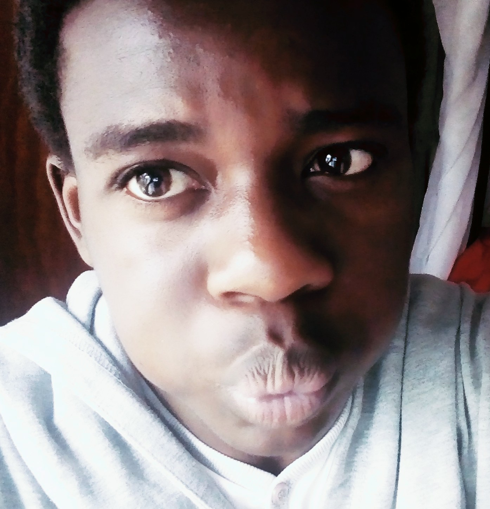
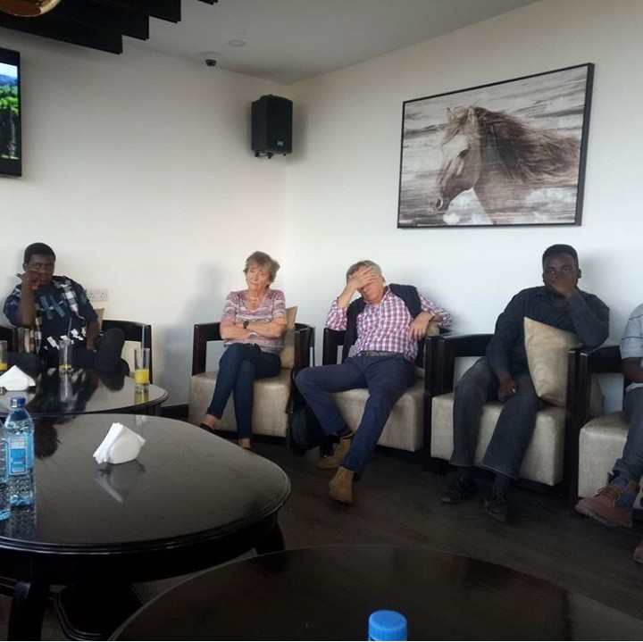

A strong believer of personal confort and relaxation, people tend to mistake me for a lazy person however, it is worthwhile to note that this simply is not true. In retrospect, although I like to take it easy, I am easily the most driven person around when it comes to pursuing my passions(like reading books and taking photos).
In am an open-minded individual who strongly supports secularism as a way of life. I tend to be very vocal about my ideologies especially when one tries to criticize me for them. I should however point out that although I am quick to defend my stand, I see no shame in admitting where I am wrong. If anything, one might argue that I indeed enjoy a challenging debate which ends with my ideologies being debunked. This is simply because loosing an arguement is an oppourtunity to grow and view the world through a different pair of eyes.
I decided to venture into the coding world simply because I was curious about computers and how they work. At first, it was just a curious rush but the more I learnt about how simple codes communicate complex instructions to these complex machines via tags, compilers, and architectures, the more beautiful and appealing the world became to me. Slowly but surely the curiousity morphed into a passion when I looked around and discovered how technology can be used to solve global problems. It was at this point that I simply had to enroll to study Computer Science here at Georgia Tech.
A curiousperson by nature, I tend to spend my free time researching and discovering new phenomena that occur in the world or sometimes entirely new,albeit fictious, worlds.
As such, my hobbies tend to revolve around the idea of exploration and discovery. These include:

Me attending one of the social meetings held in Emory Hotel
Murtallah Maninga Omtatah is a male Kenyan citizen who aspires to be a software entrepreneur.
Here is the rather brief list of my CS classes he has taken in GaTech: